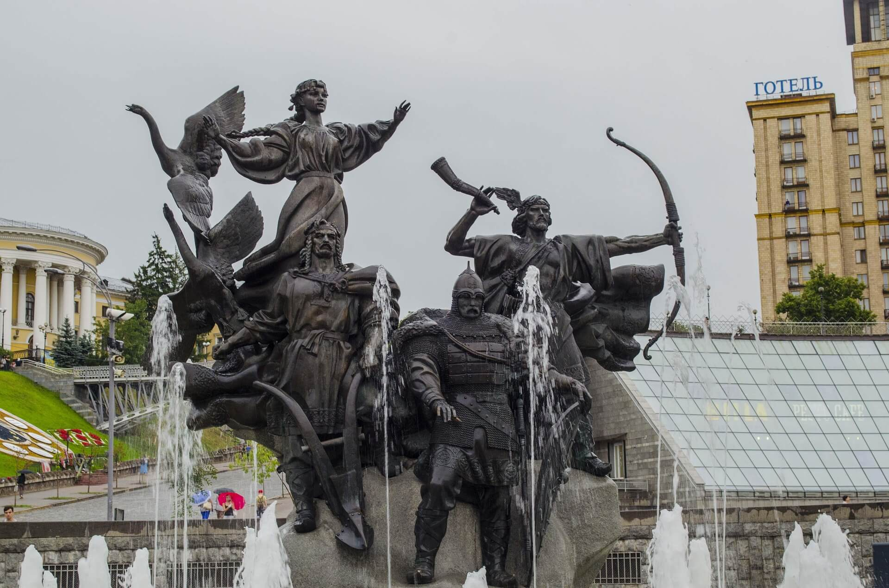
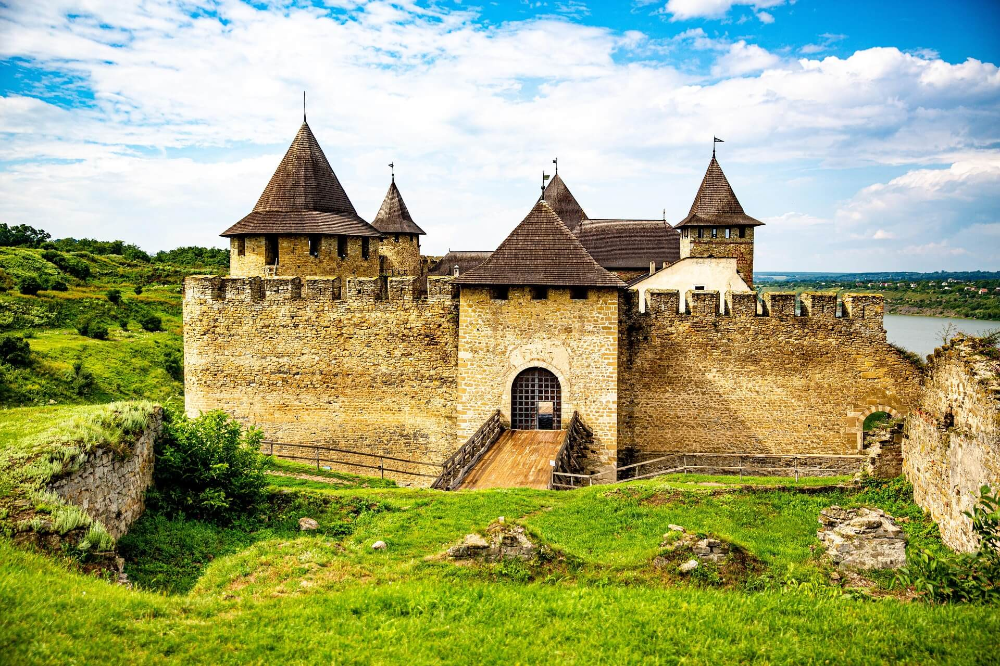
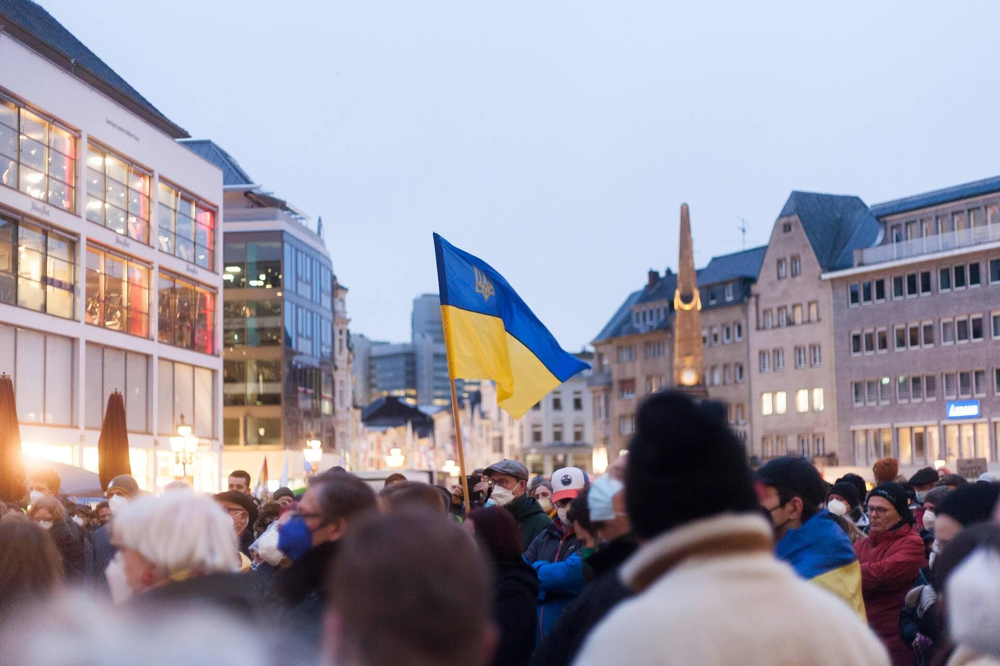

Ukraine history

Kyiv, capital of Ukraine, is one of the oldest cities in Eastern Europe, was founded around the 5th century by Slavic tribes. According to legend, the city was established by three brothers—Kyi, Shchek, and Khoryv—along with their sister Lybid.

Ukrainian history spans ancient civilizations, the powerful Kyivan Rus, periods of foreign domination, a fight for independence, Soviet control, and eventual independence in 1991.
